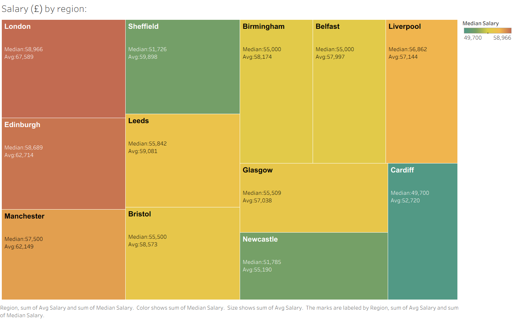
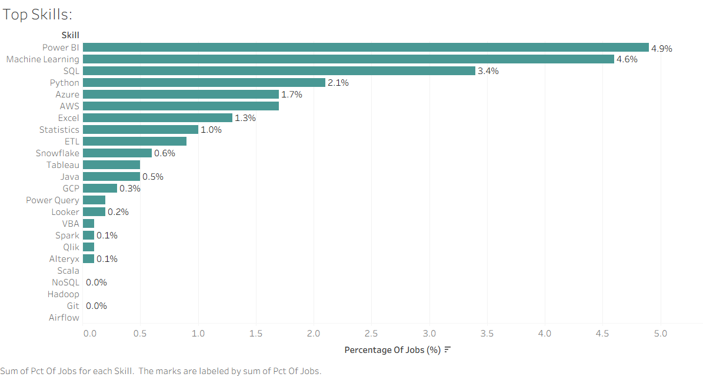
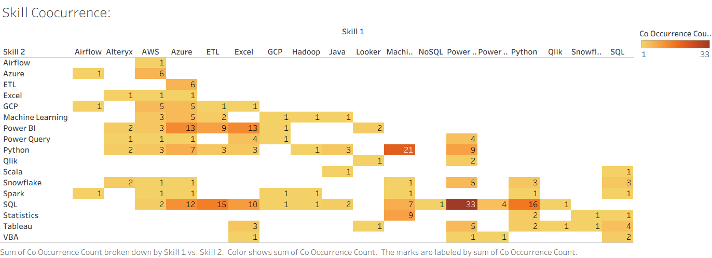

Case Study: Data Analytics
UK Data Job Market Analytics
A live-data pipeline pulling UK data-analyst job listings from the Adzuna API, cleaning and analyzing them with Python, and turning the result into a Tableau dashboard covering salary by region, in-demand skills, and which tools employers ask for together.
Overview
Rather than working from a static dataset, this project builds its own: a Python pipeline pulls live job listings from the Adzuna job-search API for five data-related search terms ("data analyst," "business analyst," "data scientist," "power bi," "sql analyst") across 12 major UK cities. A single run pulled 2,513 raw listings, which were then deduplicated, standardized, and filtered down to 2,115 clean records. From there, the pipeline computes an average salary per listing and scans each job's title and description for 26 tracked skills, producing three analysis-ready CSVs that feed directly into a Tableau dashboard.
Salary by Region
Averaging and finding the median salary for every listing in each city surfaces a clear regional pay gradient. London leads by a wide margin at an average of £67,589 (median £58,966), followed by Edinburgh (£62,714) and Manchester (£62,149). At the other end, Cardiff averages £52,720 — meaning the average London data role pays roughly 28% more than the average Cardiff one for comparable job titles. Showing median alongside average also matters: in most cities the average sits noticeably above the median, a sign that a smaller number of senior/high-paying roles are pulling the average up above what a "typical" job in that city actually pays.

Top Skills
Scanning every listing's title and description for 26 common data-analytics tools shows a market led by BI and cloud tooling rather than any single programming language: Power BI (mentioned in 4.9% of listings), Machine Learning (4.6%), and SQL (3.4%) top the list, ahead of Python (2.1%), Azure (1.7%), and AWS (1.7%). Excel, Statistics, and ETL round out the top tier. Because Adzuna's free API only returns a short description snippet rather than the full posting, these percentages understate the true mention rate for every skill — they're best read as a relative ranking (Power BI is asked for more often than Excel) rather than a literal share of the UK job market.

Skill Co-occurrence
Counting every skill pair that appears together in the same listing turns the frequency data into something more actionable: which tools are actually bundled together in real job requirements. Power BI + SQL is by far the most common pairing (33 co-occurrences), followed by Machine Learning + Python (21) and Python + SQL (16). The pattern suggests two distinct but overlapping skill clusters in the UK market: a BI/reporting cluster built around Power BI, SQL, Excel, and Azure, and a more technical analytics cluster built around Python, Machine Learning, and Statistics — with SQL acting as the bridge between both.

Approach & Tools
- Data collection: a Python script (requests) queries the Adzuna API across every search-term × city combination, paginating results while staying within Adzuna's free-tier rate limits.
- Cleaning: pandas deduplicates listings by Adzuna's own ad ID, drops records with no job title, standardizes company-name formatting, and computes an average salary from each listing's min/max range.
- Skill detection: a keyword-matching pass over each listing's title and description flags mentions of 26 tracked skills (SQL, Python, Power BI, AWS, Azure, and more), which also drives the pairwise co-occurrence counts.
- Dashboarding: the three resulting CSVs feed a Tableau dashboard combining a regional salary treemap, a ranked skills bar chart, and a skill co-occurrence heatmap into one interactive view.
Interactive Dashboard
The full dashboard is published on Tableau Public and embedded live below — hover over any region, skill, or skill pair for the exact figures behind the charts above.